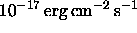

The spectroscopic pipelines, spectro2d and spectro1d, reduce the two-dimensional spectrograms produced by the spectrographs to flux- and wavelength-calibrated spectra, and then measure emission and absorption features, classify the spectra, and measure redshifts.
The spectro2d pipeline reduces the raw data and calibration images from the red and blue CCD cameras from each spectrograph and produces merged, co-added, calibrated spectra, noise estimates, and mask arrays (see Table 13) for analysis by the spectro1d pipeline. All wavelengths are expressed in Å, and are vacuum wavelengths corrected to the heliocentric frame, while the flux density is in units of Å.
The spectro1d pipeline determines emission and absorption redshifts, classifies spectra by object type, and measure lines in each spectrum. The class specObj (Table 11) contains parameters measured for the entire spectrum, as well as links to the Plate that the spectrum is from, the PhotoObj information for the object, and links to objects in Table 12: SpecLine, lines identified and measured; SpecLineName, names for the lines; SpecLineIndex, equivalent widths and redshifts; CrossCorrelationRedshift, measures of the cross correlation redshift; and EmissionRedshift, measures of the emission redshifts.
We also provide the flux- and wavelength-calibrated spectrum, the spectrum with continuum subtracted, and the estimate of the error per pixel, all in the units above, plus the mask array, as described in § 2.5.